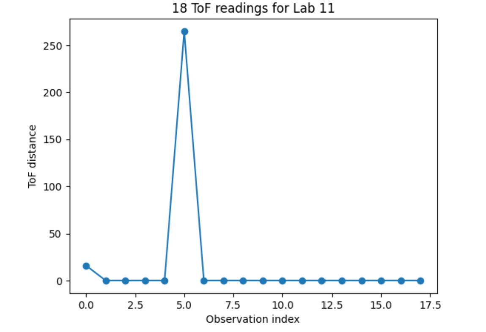

Lab 9：Mapping
Objective
The objective of this lab is to map out a static room.
Orientation Control

The logic of my code in this lab is based upon a boolean function which tells me if robot is at my desired orientation. Only one group of data will be collected upon the passing of boolean function, which is ensured by function collect_once. As long as the collection has not passed 18 times, the target orientation will be clarified and wrapped within the range from 180 to -180 degrees.


I used to only collect data when it is at the right location. However, there is time needed to initiate TOF and there is check needed whether data is ready. Therefore, I changed the TOF reading to be constant as long as PID is running. Unfornately I spent tons of time on debugging the TOF reading. Although robot can consistently rotate with 20-degree intervals, the TOF readings are not constant with valid values as different cases shown below.
Watch the video of Robot constantly rotationg with an approximately interval of 20 degrees.

I ran through code for Lab 5 which checked TOF can conduct constant readings and it is not broke.
I thought about the probability that angle wrapped around 180 degrees confusing the angle error which
caused the process of compiling data never started, while the actual output showed that angle may remain
zero from the second data which (20 degrees) is far from 180 degrees.
Another test I ran is to comment out my command to turn when it is not at the correct orientation.
In this case, TOF collects correctly and send to laptop successfully. I think this means that turning motion
actually interfered with TOF data reading or collection. It is possible that my code checks
TOF too soon after turning. If I have more time to debug, I would add waiting time before the check,
to ensure 1) data is ready when I collect it 2) there is time interval between TOF stop and
TOF reading compile to ensure reading would not get interfered by motor noises.
Reference
Thanks to Michelle Yang, Zoey Zhou, and Selena for helping me debug this lab. I also used ChatGpt to brainstorm some debugging strategies.